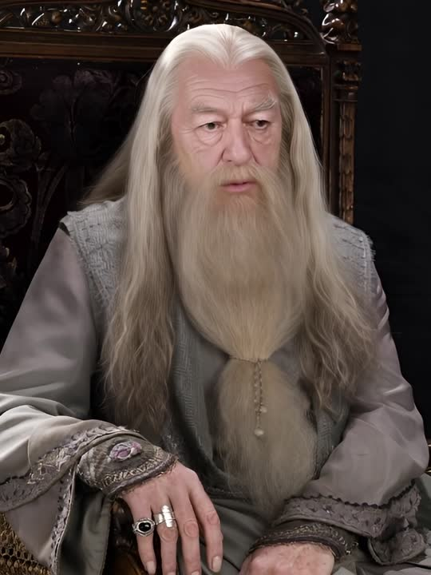
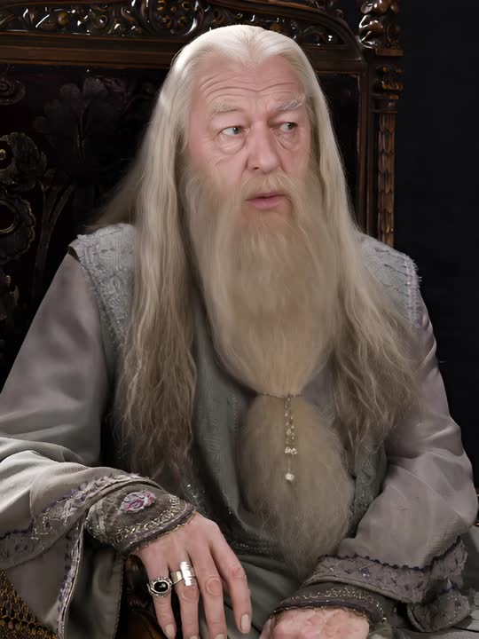

video_2026-10-29_14-07-50
| رزولوشن | 960×1280 |
|---|---|
| بیتریت | 5572 kb/s |
| bpp | 0.142 |
| شارپنس (grad) | 11.31 |
| نویز (σ) | 0.01 |
effectType=6209
| رزولوشن | 960×1280 |
|---|---|
| بیتریت | 6300 kb/s |
| bpp | 0.160 |
| شارپنس (grad) | 11.29 |
| نویز (σ) | 0.00 |
نتیجه: در همان ورودی و همان رزولوشن، خروجی ما و اپ از نظر عددی یکیاند: شارپنس ۱۱.۲۹ در برابر ۱۱.۳۱ و نویز عملاً صفر در هر دو. ترکیببندی تصویر هم یکی است — همان ژست، همان قاب، همان نور. پس «افت کیفیت» وجود ندارد؛ مقایسهٔ قبلی بین دو ورودی متفاوت بود.
موتور تازه: افکت «Neon Couple» (effectType=5202 +
imageEffectType=7186) اصلاً روی موتور دیگری اجرا میشود:
تسک با پیشوند INTEGRATED_60019 و فایل خروجی
…/temp/60004/…/wanlora-….mp4 — یعنی موتور
Wan-LoRA، با خروجی ۳۵۲×۶۴۰ و شارپنس ۶.۵۹. یعنی خیلی پایینتر از GX.